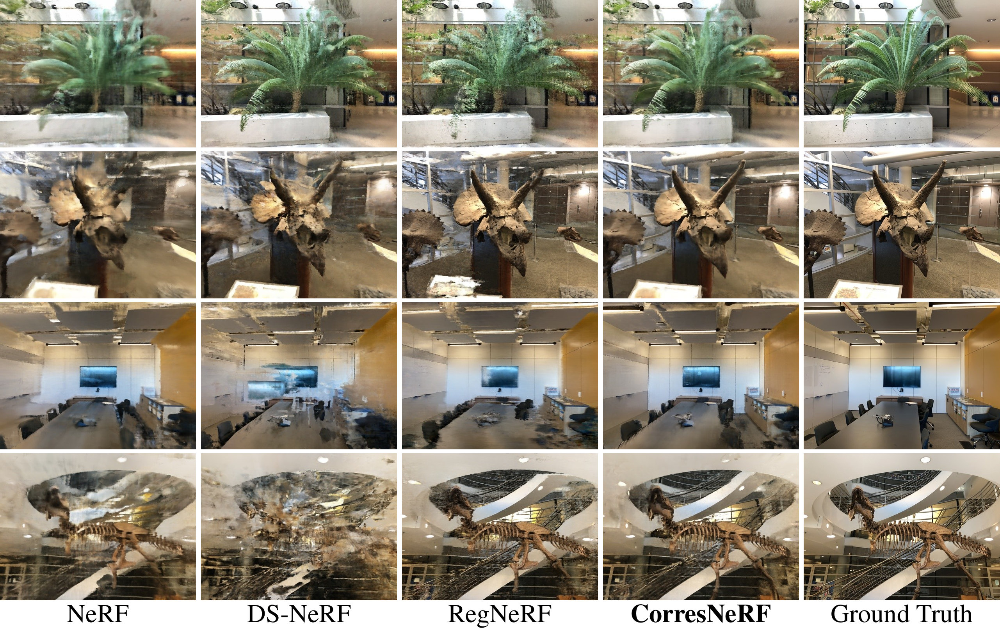

CorresNeRF: Image Correspondence Priors for Neural Radiance Fields
NeurIPS 2023
- Yixing Lao HKU
- Xiaogang Xu ZJU
- Zhipeng Cai Intel Labs
- Xihui Liu HKU
- Hengshuang Zhao HKU
Abstract
Neural Radiance Fields (NeRFs) have achieved impressive results in novel view synthesis and surface reconstruction tasks. However, their performance suffers under challenging scenarios with sparse input views. We present CorresNeRF, a novel method that leverages image correspondence priors computed by off-the-shelf methods to supervise NeRF training. We design adaptive processes for augmentation and filtering to generate dense and high-quality correspondences. The correspondences are then used to regularize NeRF training via the correspondence pixel reprojection and depth loss terms. We evaluate our methods on novel view synthesis and surface reconstruction tasks with density-based and SDF-based NeRF models on different datasets. Our method outperforms previous methods in both photometric and geometric metrics. We show that this simple yet effective technique of using correspondence priors can be applied as a plug-and-play module across different NeRF variants.

Image Correspondence Priors
Given a sparse set of sparse input images (column 1), our method leverages the image correspondence priors computed from pre-trained models (column 2) to supervise NeRF training. With image correspondence supervision, we achieve much higher quality novel view synthesis (column 3) and surface reconstruction (column 4) compared to the baseline methods.
Results - LLFF

Novel view synthesis results on LLFF with density-field-based NeRF models. We follow the convention to use every 8th image as test images, while selecting the training views uniformly from the rest of the images. The selected training views and test views are the same across all methods. Three input views are used for training.
Results - DTU
Surface reconstruction results on DTU with SDF-based models. We follow the convention to use the same subset of scenes from DTU as previous works. The models are trained without mask supervision. The selected training views and test views are the same across all methods. Three input views are used for training.
Citation
The website template was borrowed from MiP-NeRF 360.